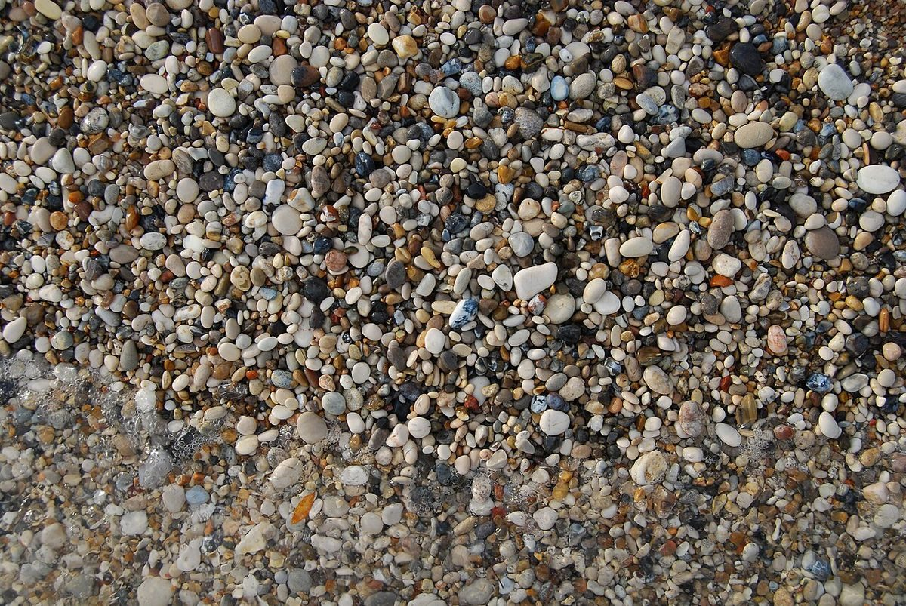

二段目
店のこと
お店について確認できているのは、所在地・電話番号・Instagramのアカウントだけです。
「想像してみる」の部分は、制作側が想像して書いたものです。お店の実際の様子・考え・メニューとは関係がありません。
確認できていること
- 店名は「カフェー積読舎」、業種はカフェ
- 所在地は北海道北見市川東29-39(〒090-0807)
- 電話番号は0157-51-1907
- Instagramのアカウントは @tsundokusya
- 営業時間・定休日・メニュー・価格・ご予約・駐車場は準備中

想像してみる
ここからは制作側の想像です。「積読舎」の文字を眺めていると、小さな石を一つ載せるたびに形が変わる石積みが思い浮かびました。お店でどんな時間を過ごせるのかは分かりません。Instagramに載っている写真や言葉から、少しずつ想像をふくらませるのも楽しそうです。
